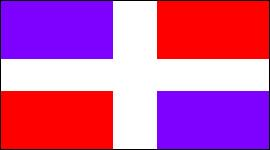
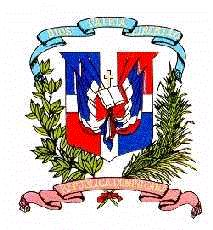

República Dominicana
|  |  |
Información general
Nombre oficial: República Dominicana
Área: 48 308 km²
Costas: 1 288 km
División política:30 provincias
Provincia Capital
- Distrito Nacional Sto. Domingo
- La Altagracia Higüey
- Azua Azua
- Boaruco Neiba
- Barahona Barahona
- Dajabón Dajabón
- Duarte San Fco. de Macorís
- Elías Piña Comendador
- Espaillat Moca
- Hato Mayor Hato Mayor del Rey
- Independencia Jimaní
- María Trinidad Sánchez Nagua
- Monseñor Nouel Bonao
- Monte Cristi Monte Cristi
- Monte Plata Monte Plata
- Pedernales Pedernales
- Peravia Baní
- Puerto Plata Puerto Plata
- La Romana La Romana
- Salcedo Salcedo
- Samaná Samaná
- San Cristóbal San Cristóbal
- Sánchez Ramírez Cotuí
- San Juan San Juan
- San Pedro de Macorís San Pedro de Macorís
- Santiago Santiago de los Caballeros
- Santiago Rodríguez Sabaneta
- El Seibo El Seibo
- Valverde Moa
- La Vega La Vega
Unidad monetaria: Peso dominicano
1 Peso dominicano = 100 centavos
Idiomas: Español (oficial), algunas comunidades de origen extranjero hablan también inglés, francés y patois (no oficiales)
Fiesta nacional: 27 de febrero, Día de la Independencia
Gentilicio: Dominicano
Hora oficial: GMT -4 horas (normal/verano)
Miembro de: ONU, OEA, ALADI (observador), LOME, CARICOM (observador)
Curiosidades
La capital de la República Dominicana es la más antigua ciudad fundada por los españoles. Surgió como Nueva Isabela en 1492 y en 1502 se nombró como Santo Domingo de Guzmán. La parte antigua, el viejo Santo Domingo es la única ciudad gótica del hemisferio americano.
La República Dominicana ocupa la parte oriental (cerca de un 74% ) de la Española.
En la Cordillera Central de República Dominicana están las alturas mayores de las Antillas (Pico Duarte, La Pelona y La Rucilla).
Información adicional en Internet.
Perfil Ecónomico
Perfil Demográfico
Población: 8.895.000 hab.
Densidad de población: 176,5 hab/km²
http://www.one.gov.do/
http://www.presidencia.gov.do/frontend/generalidades.php
Perfil Cultural
Alfabetismo: 84 %
Religión:
- Católicos: 94,4%
- No religiosos: 2,7%
- Protestantes: 1,5%
- Otros: 1,3%
Algunas figuras notables:
- Juan Bautista Alfonseca (1810-1875). Compositor
- Manuel del Cabral (1907). Escritor, poeta y novelista
- Fabio Fiallo (1866-1942). Poeta
- Manuel de Jesús Galván (1834-1911). Escritor y ministro
- Pedro Henríquez Ureña (1884-1946). Crítico literario, ensayista, periodista y prosista
- Max Henríquez Ureña (1885-1968). Escritor, educador, ensayista y poeta
- Enrique de Marchena (1908). Compositor
- Pedro Julio Mir Valentín (1913). Abogado
- Antonio Prat Ventos (1925). Escultor
- Manuel Rueda (1921). Pianista, compositor, escritor, poeta y crítico
Lugares declarados patrimonio mundial por la UNESCO
- Santo Domingo (ciudad colonial).
Sistema de Gobierno
Constitución vigente: 28 de noviembre de 1966
Sistema ejecutivo: Presidente y Vicepresidente (elegidos directamente por un período de cuatro años). Gabinete de Secretarios de Estado, un Secretario administrativo y un asesor económico.
Sistema legislativo: Senado (un Senador por cada provincia y distrito nacional) y Cámara de Diputados (120 miembros, uno por cada 50 000 habitantes o fracción mayor de 25 000 habitantes). Senadores y representantes elegidos directamente para un período de cuatro años.
Sistema judicial: Corte Suprema (nueve magistrados y el Procurador General), nueve cortes de apelación, treinta jueces de primera instancia y un juez o alcalde por cada municipio de la república.
Gobierno subdivisional: Gobernador civil en cada provincia y consejos municipales.
Aproximación histórica
La República Dominicana ocupa las dos terceras partes de la isla de Santo Domingo.
Descubierta por Colón en su primer viaje en 1492, su capital fue fundada por Bartolomé Colón en 1496 y es la más antigua ciudad de América. Allí se estableció en 1511 la Primera Audiencia de América.
La independencia se proclamó en 1821, José Nuñez de Cáceres proclama la independencia, con la esperanza de unir el nuevo país a la Gran Colombia. Al año siguiente es invadida por Haití que la mantiene bajo su dominio durante 22 años. En 1844 se proclamó la segunda independencia estableciéndose la República Dominicana.
Santo Domingo presenta cadenas montañosas al este y al oeste, con fértiles valles al centro.
Entre los rubros principales de exportación de la República Dominicana se encuentran el hierro, níquel y azúcar. El turismo es otra actividad de gran importancia para el país.
«-- ir al comienzo
«-- regresar